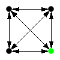
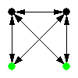
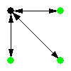
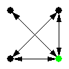
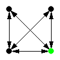
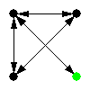
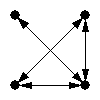
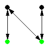
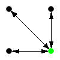

Size-4 Network Motifs in 'fs_1_ps_0.15_fd_0_pd_0.15_rep_1.txt' |
Page 1 |
Generated with
FANMOD - FAst Network MOtif Detection. Written by Sebastian Wernicke and Florian Rasche
| ID |
Adj |
Frequency
[Original] |
Mean-Freq
[Random] |
Standard-Dev
[Random] |
Z-Score |
p-Value |
| 31710 |
 |
4.4685% |
3.0954e-005% |
4.1843e-006 |
10679 |
0 |
| 31710 |
 |
1.7525% |
0.00018264% |
2.3415e-006 |
7483.5 |
0 |
| 13278 |
 |
1.2209% |
0.0012128% |
2.334e-005 |
522.57 |
0 |
| 13278 |
 |
1.4369% |
0.026289% |
3.092e-005 |
456.21 |
0 |
| 4382 |
 |
0.55694% |
0.20013% |
9.5932e-006 |
371.94 |
0 |
| 13278 |
 |
7.991% |
0.0087603% |
0.0002379 |
335.52 |
0 |
| 4958 |
 |
4.4117% |
0.86849% |
0.00029345 |
120.74 |
0 |
| 13278 |
 |
1.0253% |
0.12739% |
0.00010425 |
86.132 |
0 |
| 4958 |
 |
1.6231% |
0.0089261% |
0.00021749 |
74.217 |
0 |
| 4958 |
 |
23.241% |
0.1483% |
0.0031332 |
73.701 |
0 |
| 8598 |
 |
3.2422% |
2.299% |
0.00014391 |
65.54 |
0 |
| 4958 |
 |
3.2176% |
0.90983% |
0.00046663 |
49.458 |
0 |
| 4958 |
 |
0.85952% |
0.2153% |
0.0001308 |
49.254 |
0 |
| 4382 |
 |
4.2726% |
3.1227% |
0.00033108 |
34.733 |
0 |
Previous
Index
Next
Generated with
FANMOD - FAst Network MOtif Detection.
Written by Sebastian Wernicke and Florian Rasche
|